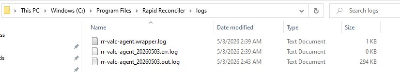

Server Migration
Steps for migrating your RapidReconciler environment to a new server — whether that’s replacing the application server, the database server, or both. After your work is complete, you’ll send the new IP addresses to rrsupport@getgsi.com so GSI can update VALC and Cloudflare on their side.
What are you replacing?
Pick whichever applies. Each topic is self-contained — if you’re replacing both servers (in any topology), work through both topics in any order.
| You’re replacing… | Follow this topic | Send rrsupport |
|---|---|---|
| Application server | Application Server Migration | Public-facing IP and internal IP of the new app server |
| Database server | Database Server Migration | Internal IP of the new database server |
| Both servers | Both topics, in any order | All three values (or just the two from the app server, if you’re consolidating onto a single new machine that hosts both) |
| Your JDE server (RR servers unchanged) | JDE Server Move | Nothing — no rrsupport email needed (VALC and Cloudflare still point at the same RR app server) |
Topology change — e.g., dedicated single machine to two separate servers, or vice versa — is handled the same way: run the per-server topic for each new server you’re standing up.
Topics
| Topic | What it covers |
|---|---|
| Application Server Migration | Replacing the server that hosts the RapidReconciler Agent and SSIS package — including cloud-hosted variants (AWS, Azure, etc.). |
| Database Server Migration | Replacing the SQL Server that hosts the RapidReconciler_Prod database. Covers same-version replacements and SQL version upgrades (e.g., 2017 → 2022). |
| JDE Server Move | Updating the SSIS JDE Source connection manager when your JDE host changes — an IP / hostname change, a planned cutover, or an on-premise to cloud migration. RR servers stay put. |
| What to send rrsupport | The values to email rrsupport@getgsi.com after your work is done so GSI can update VALC and Cloudflare on their side. |
| Post-Migration Checklist | End-to-end verification list to confirm every step is complete before sign-off. |
Before starting, notify the users who depend on RapidReconciler of the planned maintenance window. Data will be unavailable during the migration and the cutover that follows — coordinate timing to minimize disruption.
Don’t enable the SQL Agent job schedule on the new server until rrsupport has confirmed VALC and Cloudflare are updated and you’ve verified data is appearing in the UI. Premature enable runs the job against an unfinished cutover and can create confusing partial states.
Application Server Migration
Use this topic when you’re replacing the server that hosts the RapidReconciler Agent and the SSIS package. Works for any target architecture: a new on-premise machine, a cloud VM (AWS, Azure, etc.), or consolidating to or from a single-machine setup.
Software Prerequisites
Confirm all of the following are in place on the new application server before beginning the migration steps:
- New application server prerequisites
- Administrator access on the new server
- SQL Server Management Studio
- Visual Studio Community Edition with the SQL Server Integration Services extension
- Applicable JDE database drivers (AS/400 or Oracle)
The RapidReconciler Agent will be installed as part of the migration steps below — it does not need to be pre-installed.
Cloud environments add a network-plumbing layer between the app server and the database server. Before cutover, plan time to verify Security Groups, Network ACLs, OS firewalls, and VPC routing — the database server’s inbound rules need to permit SQL traffic (port 1433) from the new app server’s IP. The architecture only requires outbound connectivity from your side; no inbound port exposure on your side is needed.
If users get login failures after cutover even though the database is reachable elsewhere, see Post-migration login fails — app server can’t reach the database for the cloud-specific walkthrough.
Application Server Process
Run the steps below in order. The migration isn’t complete until you’ve sent rrsupport the values from the final step.
Before you can install the RR Agent, GSI needs to set your VALC client status to “Created”. Without this, the agent download prompt won’t appear after login.
Email rrsupport@getgsi.com with:
- Subject: Server Migration — Set VALC status to Created
- Your customer name
- The reason: starting an app server migration; need agent download prompt enabled
Wait for rrsupport’s confirmation before proceeding to Step 3 (Install RR Agent). You can do Step 2 (Copy SSIS Package) in parallel.
- Locate the SSIS package file (
.dtsx) on the old application server. - Copy it to a known location on the new application server.
- From the new application server, open a web browser and navigate to https://rapidreconciler.getgsi.com.
- Log in using the GSIADMIN credentials.
- Download and install the RapidReconciler Agent (64-bit in most cases).
- Follow the on-screen prompts. The page will display “Installation Complete” when finished.
Confirm rrsupport has set your VALC status to “Created” (Step 1). If they have and the prompt still doesn’t appear, hard-refresh the browser and try again. If it’s still missing, reply on the rrsupport thread with the issue.
- Open Visual Studio Community using the Integration Services project template.
- Create a new project named
RapidReconciler. - Add the copied
.dtsxpackage to the project. - Update the source (JDE) and destination (
RapidReconciler_Prod) connection strings to point at the correct servers. If you’re also migrating the database server, point at the new database server’s internal IP. - Test all connections to confirm they are valid.
- Deploy the package to the SSISDB RapidReconciler folder on the database server.
You need both the internal and the public-facing IPs of the new app server — rrsupport puts both into VALC.
- Navigate to the RapidReconciler log file on the new application server.
- Note the Internal IP address.
- Note the External (public-facing) IP address.
- Hold both values for What to send rrsupport.
The log files are always at this exact path on the application server:
C:\Program Files\Rapid Reconciler\logs
The folder contains three log files. The IP addresses you need are in the dated .out.log file (the one that ends in _YYYYMMDD.out.log).

If you’re also migrating the database server, continue to Database Server Migration. Otherwise, continue to What to send rrsupport.
Database Server Migration
Use this topic when you’re replacing the SQL Server that hosts the RapidReconciler_Prod database. Covers same-version replacement (e.g., new hardware, new VM) and SQL version upgrades (e.g., 2017 → 2022). Side-by-side migration is preferred — keep the old database server up until cutover succeeds.
Software Prerequisites
Confirm all of the following are in place on the new database server before beginning the migration steps:
- New database server prerequisites
- SQL Server Standard Edition (minimum), Version 2017 or later
- Administrator access to complete all required tasks
- Integration Services installed
- Integration Services Catalog (SSISDB) created
RapidReconcilerfolder added to SSISDB- Applicable JDE database drivers (AS/400 or Oracle)
- TempDB sized and configured per your standards
RapidReconciler folder.
Run the Microsoft Data Migration Assistant (DMA) against the source database before cutover. Specifically check for:
- Deprecated features still in use.
- Compatibility level changes — the database’s compatibility level on the new server may need to be set explicitly to match the desired SQL behavior, especially if you want pre-2022 query optimizer behavior temporarily.
- Collation differences between source and target instances.
Address findings before cutover, not after.
Database Server Process
Run the steps below in order. Don’t enable the SQL Agent job schedule on the new server until the full cutover (including the rrsupport email) is complete and you’ve verified data is appearing in the UI.
- Notify users of the maintenance window.
- Disable scheduled jobs and integrations on the source database server so they don’t fire mid-cutover and create partial state.
- Confirm no active user sessions or in-flight reconciliation processes.
- Take a final full backup of the source database (verified) and a transaction-log backup if applicable. Keep these readily accessible — they’re your rollback artifacts.
- Copy the backup file from the source server to the new database server.
- Restore
RapidReconciler_Prodon the new server. - Set the database’s compatibility level to the RR floor — 140 (SQL Server 2017) by default:
A restored backup keeps the source server’s compatibility level even on a newer engine. RR’s stored procedures are tested at compat 140; leaving an older level (e.g. 100 if the source was SQL Server 2008) will break newer syntax in the sprocs. If your prep checklist pins the SQL 2019 floor instead, useALTER DATABASE RapidReconciler_Prod SET COMPATIBILITY_LEVEL = 140;150.
Run a quick row count on key tables such as F4111 on the restored database and compare against the source. Confirming counts match catches a silent restore failure before you build the rest of the environment on top of it.
Also confirm the compat level took:
SELECT compatibility_level FROM sys.databases WHERE name = 'RapidReconciler_Prod';- Add the
RRUSERSQL Authentication login on the new server using the script from the old server. - Map the SID from the source login so database-level user permissions resolve correctly. Without SID mapping, the database user inside
RapidReconciler_Prodwill be orphaned from the server-level login and authentication will fail in confusing ways. - Validate the login can connect using the same credentials the application will use.
- Create the RapidReconciler SQL Agent job on the new server using the script from the old server.
- Verify the job step points to the correct SSIS package path in the SSISDB catalog (
/SSISDB/RapidReconciler/RapidReconciler/RapidReconciler-Prod.dtsx). - Configure the job schedule to match the original server settings.
- Do not enable the schedule yet. The schedule stays disabled until the full cutover is validated.
If you’re also migrating the application server, the SSIS package gets deployed in the app-server steps. Confirm it’s deployed before enabling the SQL Agent job schedule.
Only the internal IP is needed for the database server — rrsupport doesn’t need a public-facing IP for the DB.
- On the new database server, identify the internal IP address it’s reachable at from the application server.
- Hold the value for What to send rrsupport.
If issues surface after cutover and you can’t resolve them quickly, the rollback is straightforward because of the side-by-side approach: the source database is still alive. To roll back, redirect the application back to the source server (revert the connection strings or, in coordination with rrsupport, revert the VALC values), re-enable jobs on the source, and notify stakeholders that the migration is paused. Don’t decommission the source server until the new environment has been stable for a sign-off period.
If you’re also migrating the application server, complete Application Server Migration before continuing. Otherwise, continue to What to send rrsupport.
JDE Server Move — SSIS Connection Update
Use this topic when your JDE host changes and the RR servers themselves don’t move — an IP / hostname change, a planned cutover to a fresh JDE environment, or an on-premise to cloud migration of JDE. Only the JDE Source connection manager on the SSIS package needs to change; nothing on the RR side or on GSI’s side (VALC, Cloudflare) is affected.
Because nothing visible to GSI changes (the RR app server still has the same internal / external IPs, the RR database server still hosts RapidReconciler_Prod), VALC and Cloudflare don’t need updating. Skip the “What to send rrsupport” step at the end. If you’re also moving an RR server at the same time, work through that topic separately — the app-server migration topic re-deploys the whole SSIS project from scratch and updates both source and destination connections.
Software Prerequisites
Confirm these are in place on the RR application server before starting:
- RR application server prerequisites
- Visual Studio Community Edition with the SQL Server Integration Services extension
- Outbound network connectivity from the RR app server to the new JDE host — host / port reachable; firewall and DNS already opened by your network team
- JDE database driver matching the new JDE environment (IBM i Access Client Solutions, Oracle Database client, etc.). Usually the same driver family as before, but cloud-hosted JDE may need a newer version — see On-prem to cloud below
- Credentials for the SSIS service account that will read from the new JDE (typically a read-only database user your JDE team provisions ahead of the cutover)
Information to gather from your JDE team
Collect these values before opening Visual Studio so you don’t have to bounce back and forth mid-edit:
| Field | Notes |
|---|---|
| Hostname / IP | The DNS name or IP the RR app server should connect to. For cloud JDE you will usually receive a hostname behind a private endpoint or VPN; confirm the RR app server can resolve it and reach it on the relevant port. |
| Port | Platform default unless your DBA has overridden it — 1521 (Oracle), 50000 / 50001 (DB2 LUW), 446 / 448 (DB2 for i with SSL), 1433 (SQL Server). |
| Database / schema / library | The JDE production library (often PRODDTA, CRPDTA) for DB2 for i, or the Oracle schema name for Oracle-hosted JDE. |
| Service account | Username + password for the read-only account RR will use. Cloud environments often introduce new auth methods (OAuth, Azure AD, wallet-based connections) — confirm with the JDE team which method the new environment expects. |
| TLS / SSL requirement | Cloud-hosted JDE almost always requires encrypted connections. Get the issuing certificate chain if it’s a private CA; SSIS will reject the connection if the certificate isn’t trusted by the RR app server. |
The Change Process
Seven steps. Disable the scheduled job before you start so it can’t fire mid-cutover, work through the connection-string update on the RR application server, then re-enable the schedule once the verification fetch confirms the new connection works.
Before changing the connection string, stop the scheduled job from firing mid-cutover. If it fires against a partially-updated configuration, it will either fail or pull stale data — both create noise you’ll have to clean up later.
- Open SSMS on the RR database server → expand SQL Server Agent → Jobs.
- Find the RR data-pull job (the one that calls the SSIS package).
- Right-click → Disable. The job icon flips to the disabled state (a small red arrow / grey badge depending on your SSMS version).
- Confirm with whoever’s coordinating the maintenance window — while the job is disabled, no fresh data will appear in RR until you re-enable in Step 7.
Right-click → Disable is the simplest path — it blocks both the schedule and ad-hoc Start Job runs that aren’t yours. The one-shot verification in Step 6 still works because Start Job at Step ignores the disabled state. Alternatively, you can leave the job enabled and just uncheck the schedule (Properties → Schedules tab); use this if there are other operators who may need to run the job manually during the window.
You need the project (not just the deployed package). Two paths depending on whether you have the source files:
- If you have the project files (the
.dtprojon the app server or in source control): open it directly via File → Open → Project/Solution. - If only the deployed package is available: import from SSISDB. File → New → Project → Integration Services Import Project Wizard, then point at the database server hosting SSISDB and select SSISDB → RapidReconciler → (project name). The wizard pulls everything back into a fresh project on your local disk that you can edit and re-deploy.
Connection managers live in two places — check the project level first:
- Project-level: in Solution Explorer (right pane), expand Connection Managers. The JDE Source connection appears here when it’s shared across multiple packages.
- Package-level: open the
.dtsxfrom Solution Explorer, then look at the Connection Managers tray at the bottom of the design surface. Package-scoped connections live here.
The connection manager is typically named JDE Source, JDE, or a similar customer-recognizable label. If you’re not sure which one is the JDE source, right-click each and pick Properties — the ConnectionString property names the JDE host directly.
- Right-click the JDE Source connection manager → Edit.
- Update the fields with the new connection details:
- Server / Data Source: new JDE hostname or IP
- Initial Catalog / Database / Schema: usually unchanged, but confirm
- Authentication: select the auth method matching the new environment
- User name / Password: the new service-account credentials
- For cloud-hosted JDE, click All in the connection dialog and add encryption options if applicable:
Encrypt=true, and eitherTrustServerCertificate=falsewith the root CA installed on the app server (the secure default), orTrustServerCertificate=trueif your security policy allows it (convenient but skips certificate validation — don’t use in production unless you’ve agreed to the trade-off with your security team). - Click Test Connection. If it returns Test connection succeeded, you’re good. If it fails, the error message points at the cause — most often a firewall block, an incorrect credential, an untrusted certificate, or a missing / outdated driver.
- Click OK to save.
SSIS treats connection-string passwords as a sensitive property. Confirm the project’s ProtectionLevel (Project property page) is EncryptSensitiveWithPassword or EncryptSensitiveWithUserKey — not DontSaveSensitive (which silently drops the password on deploy and the job will fail at runtime). Whichever protection you pick, document the protection password somewhere the next person who edits the project can recover it.
- Build → Build Solution (Ctrl+Shift+B). Confirm 0 errors in the Output window.
- Right-click the project in Solution Explorer → Deploy.
- Step through the deployment wizard. Target the existing SSISDB / RapidReconciler / (project name) path on the database server — you’re overwriting the deployed version with the updated connection.
- Confirm the wizard ends with Deployment of project complete.
Don’t wait for the next scheduled run — trigger the SQL Agent job manually so you find connection or auth errors immediately.
- Open SSMS → connect to the RR database server → expand SQL Server Agent → Jobs.
- Find the RR data-pull job (the one that calls the SSIS package).
- Right-click → Start Job at Step… → pick the SSIS step → Start.
- Open Job Activity Monitor to watch progress. A clean run confirms the new connection works end-to-end.
- Refresh the RapidReconciler UI and confirm fresh data is appearing — the System Status light goes green and the latest run time updates.
The SSIS error log is the first stop — SSMS → SQL Server Agent → Job Activity Monitor → right-click the failed job → View History, then drill into the failed step and expand the error message. Almost every connection failure is a credential mismatch, a firewall block, a missing root CA (for cloud TLS), or the wrong driver version. The Test Connection in Step 4 catches most of these — if Test Connection passed but the job still fails, the most common cause is that the SQL Agent service account on the database server is a different user from the one you tested with in Visual Studio. Re-test from a command-line tool running as the SQL Agent account to confirm.
Step 7 re-enables the schedule. If the verification fetch in Step 6 didn’t succeed, leaving the schedule disabled is the correct state — the scheduled job will just fail loudly on the next firing if you re-enable too early. Resolve the failure first (or roll back the connection-string change), then re-run Step 6, then enable.
Once the verification fetch in Step 6 has succeeded and the RR UI is showing fresh data, restore the scheduled run.
- Open SSMS → SQL Server Agent → Jobs.
- Right-click the RR data-pull job → Enable. The job icon flips back to the enabled state.
- (If you used the alternative path in Step 1) Right-click → Properties → Schedules tab → re-check the schedule and click OK.
- Note the next scheduled run time. Monitor Job Activity Monitor (or just check the RR System Status light) at that time to confirm the first scheduled run completes successfully.
The Step 6 manual fetch ran as your user via Start Job at Step; the scheduled run uses the SQL Agent service account. A credential mismatch between the two surfaces here. Check the job history (right-click the failed job → View History) for the auth error, then either grant the SQL Agent service account access to the new JDE database or update the SSIS connection to use a credential the SQL Agent account already has.
On-prem to cloud — specific pitfalls
When the JDE move is from on-premise to a cloud-hosted environment (Oracle Cloud Database, AWS RDS, IBM Power Virtual Server for DB2 for i, Azure SQL, etc.), the connection-string update itself is the same shape, but several supporting concerns become first-class:
| Concern | What’s different | What to do |
|---|---|---|
| Network latency | On-prem JDE typically sits on the same LAN as the RR app server with sub-millisecond round-trips. Cloud JDE adds 10–100 ms per round-trip, often more across regions. | Plan for the nightly fetch to run 2–10× longer. Run a test pull during off-hours, time it, and adjust the SQL Agent schedule so the job completes before users arrive. |
| VPN / private link | Most cloud JDE deployments don’t expose the database publicly — access is through a site-to-site VPN, an AWS PrivateLink, an Azure Private Endpoint, or an Oracle Cloud FastConnect. | Confirm your network team has the tunnel up and the RR app server is on the right route. tnsping (Oracle), db2 connect (DB2), or Test-NetConnection (PowerShell) from the app server is the fastest way to confirm reachability before touching SSIS. |
| Firewall & DNS | Outbound rules from the RR app server now have a different destination IP or hostname. Internal DNS may need a new record. | Get the new IP from your JDE team and confirm with your network team that outbound on the JDE port is allowed. If using a private DNS zone, confirm the RR app server is configured to resolve it. |
| TLS / SSL | Cloud DBs almost always require encrypted connections, and many use a private CA the RR app server doesn’t trust by default. | Install the issuing CA into the Windows Trusted Root Certification Authorities store on the RR app server before testing the connection. Use certmgr.msc or PowerShell Import-Certificate. Don’t default to TrustServerCertificate=true — it works but disables certificate validation entirely. |
| Authentication | On-prem typically uses Windows-integrated, SQL-auth, or DB2 user / password. Cloud often adds OAuth, Azure AD, federated SSO, or wallet-based connections (Oracle Cloud Autonomous Database). | Use the auth method your cloud DBA recommends. For Oracle Cloud Autonomous, that’s usually a TNS wallet — download it from OCI, copy to the app server, set TNS_ADMIN to its location, and use a TNS Service Name connection (not Host / Port). For Azure SQL Managed Instance behind Azure AD, use the Microsoft.Data.SqlClient provider with Authentication=Active Directory Service Principal. |
| Driver version | Older drivers (legacy iSeries Access, Oracle 11g client) may not negotiate TLS 1.2 / 1.3 properly or may not support the cloud’s connection topology. | Plan to upgrade the driver on the app server as part of the JDE move. For Oracle, install the matching cloud-side client (19c or 21c). For IBM i, install the latest IBM i Access Client Solutions. For SQL Server / Azure SQL, replace Microsoft OLE DB Provider for SQL Server with Microsoft OLE DB Driver 18+ for SQL Server (MSOLEDBSQL18). |
| Time zones | Cloud DBs often run in UTC regardless of where you are; on-prem usually runs in the local time zone. The RR data fetch uses timestamp comparisons that can misbehave when the source TZ shifts. | Spot-check timestamps in the first post-move fetch. Pick a specific document, look at the JDE side and the RR side, and confirm the timestamps match. If they’re off by exactly your TZ offset, you have a TZ issue and the SSIS data flow needs explicit conversion in the source query. |
| Egress cost | Cloud providers charge for data leaving the cloud. RR’s nightly pull can move gigabytes of cardex / ledger data. | Estimate per-pull data volume after a few real runs — your cloud cost dashboard will show it. If the cost is higher than expected, options are: filter the SSIS source query more aggressively, schedule the pull less frequently (weekly summaries + daily deltas), or co-locate the RR app server in the same cloud region as the JDE source to avoid egress entirely. |
| Service-account secrets | Cleartext passwords in .dtsx packages are poor practice on-prem and usually fail compliance review for cloud connections. |
Use SSIS project parameters marked Sensitive for the password. The project ProtectionLevel determines how Sensitive parameters are encrypted at rest. For the more secure option, use a credential-store integration (Azure Key Vault for Azure SQL, OCI Vault for Oracle Cloud) and reference the secret from the SSIS package via an environment variable. |
For an on-prem → cloud move, the cloud JDE is usually stood up before the on-prem one is retired. Use that overlap. Stand up a second SSIS project (or a second connection-manager configuration) pointing at the new cloud JDE, run a few full fetches against it while the on-prem source is still live, and compare row counts and selected dollar totals before flipping production over. The time-zone, driver, and egress issues above are best caught while you still have the on-prem source as a reference.
That’s the whole procedure for a customer-side JDE move — nothing to send to rrsupport. If you’d like a quick sign-off list, the Post-Migration Checklist has a JDE-only path at the top.
What to send rrsupport
Once your server work is done and you have the IP values captured, email rrsupport@getgsi.com with the values below. GSI updates VALC and coordinates the Cloudflare DNS change on their side — you don’t have direct access to those.
What to email
Pick the row that matches what you migrated:
| You replaced… | Send these values |
|---|---|
| Application server only |
|
| Database server only |
|
| Both servers (split onto two machines) |
|
| Both servers (consolidated to one machine) |
|
Confirm each IP is correct before sending. An incorrect IP entered into VALC will prevent the agent from communicating and block the rest of the cutover — rrsupport will need a second email to fix it.
Email template
Use this as a starting point — adjust to match what you migrated:
To: rrsupport@getgsi.com Subject: Server Migration — VALC update needed (CUSTOMER NAME) Hi rrsupport, We’ve completed our server migration and need VALC + Cloudflare updated to point at the new infrastructure. Customer: CUSTOMER NAME What we replaced: [application server / database server / both] New values: App server internal IP: XX.XX.XX.XX App server public-facing IP: XX.XX.XX.XX Database server internal IP: XX.XX.XX.XX Other changes (if any): [e.g., new domain URL, change in dedicated vs separate topology, anything else worth noting] Our SQL Agent job schedule on the new database server is currently disabled — we’ll enable it once you’ve confirmed VALC and Cloudflare are updated and data is appearing in the UI. Thanks, NAME · CUSTOMER IT
What rrsupport does next
For your awareness — you don’t need to do anything in this section, but it helps to know what’s happening on the GSI side after your email.
- Updates VALC. Sets the new IPs on the Client Details and Databases pages.
- Coordinates the Cloudflare DNS update with GSI I/T to point the public-facing domain at the new app server’s public-facing IP.
- Confirms back to you when both updates are complete.
- DNS propagation can take some time after the Cloudflare change — the UI may not load with the new data immediately.
Once rrsupport says VALC and Cloudflare are updated and DNS has propagated, log in to the RapidReconciler UI to verify data is appearing. Then enable the SQL Agent job schedule on the new database server. Verify the first scheduled run completes successfully.
Walk through the Post-Migration Checklist to confirm every step has been completed before signing off.
Post-Migration Checklist
End-to-end verification list. Walk this top to bottom before signing off the migration. Skip the sub-sections that don’t apply to what you migrated. Anything unchecked is a blocker for go-live.
Pre-Migration
- Before starting
- Users notified of the maintenance window
- Final source-server backup taken (verified) and held as the rollback artifact
JDE Server Move (skip if your JDE host isn’t changing)
- JDE Server Move
- New JDE connection details collected from your JDE team (host, port, library / schema, service account, TLS / SSL requirement)
- RR app server has outbound reachability to the new JDE host (firewall + DNS confirmed)
- Required JDE database driver installed / upgraded on the RR app server (for on-prem → cloud, verify driver version supports TLS 1.2+ and the cloud’s auth method)
- (Cloud only) Issuing CA installed in the Windows Trusted Root Certification Authorities store on the RR app server
- RR data-pull SQL Agent job disabled before changing the connection string
- SSIS JDE Source connection manager updated in Visual Studio; Test Connection succeeded
- Project rebuilt with 0 errors and re-deployed to SSISDB
- One-shot SQL Agent run (Start Job at Step) completed successfully; fresh data visible in the RR UI
- (Cloud only) First-run row counts and selected dollar totals spot-checked against the source while it is still live
- RR data-pull SQL Agent job re-enabled after the verification fetch succeeded
- First post-cutover scheduled run completed successfully
Application Server (skip if not migrating the app server)
- Application Server
- Software prerequisites installed on new app server (SSMS, Visual Studio with SSIS, JDE drivers)
- rrsupport set VALC status to “Created”
- SSIS package copied to new app server
- RR Agent installed and showed “Installation Complete”
- SSIS package deployed to SSISDB on the database server
- Internal and public-facing IPs captured from the agent log file
Database Server (skip if not migrating the DB server)
- Database Server
- Software prerequisites installed on new DB server (Integration Services, SSISDB, JDE drivers)
- Source database backup taken (verified)
- Database restored on new server and record counts verified against source
RRUSERlogin created with SID mapped from source- SQL Agent job recreated with the original schedule, schedule not yet enabled
- Internal IP of new DB server captured
- (SQL upgrade only) DMA findings reviewed; compatibility level set; collation verified
Sent to rrsupport
- Email handoff
- Email sent to
rrsupport@getgsi.comwith the values matching what was migrated - rrsupport confirmed VALC was updated
- rrsupport confirmed Cloudflare DNS update is in place
- DNS propagation confirmed (UI loads at your users’ sign-in URL)
Validation & Sign-Off
- Validation
- Logged in to the RapidReconciler UI; data is visible
- Spot-checked key figures against source JDE data
- SQL Agent job schedule enabled on the new DB server
- First scheduled run completed successfully
- Users notified migration is complete
Every box checked? Migration is complete — archive the source-server backup per your retention policy, hold the source server itself for an agreed sign-off period in case you need to roll back, and document any customer-specific notes that emerged during cutover for the next time.